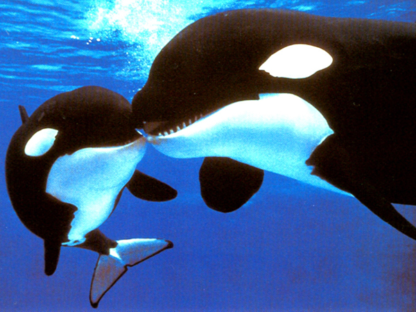
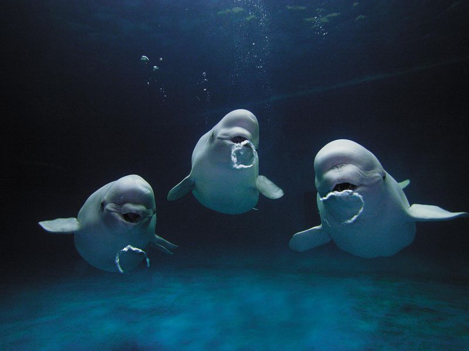
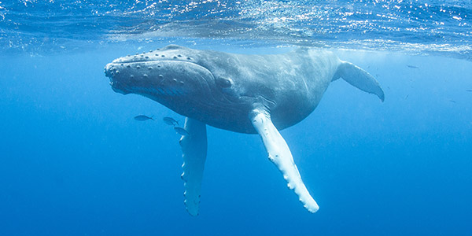

Saving the Whales
This website gives an overview on why us as society needs to take the oceans and the many animals in it into consideration. Oceans today are being heavily mistreated by humans. Ocean pollution not only affects us, but affects all oceanic wildlife. One of the main creatures being negatively affected are the whales. This website gives lots of information about why we need to help save them and stop ocean pollution at the same time. The About tab brings you to a page about how the whales are being affected. The "Whales" tab brings you to a page with fun facts about the different types of whales. The "Ocean Pollution" tab brings you to a page on how humans are affecting the oceans and how we can stop ocean pollution. The "How to Help" tab brings you to a page on how YOU can help! The "Donate" tab brings you to a website where you can donate to a "Save the Whales" organization. The "Contact Us" tab brings you to a page where you can contact the creators of this website incase you have any questions, concerns, or feedback.


